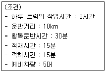
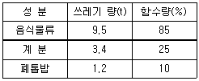
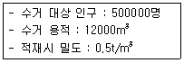
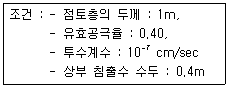
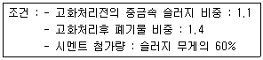
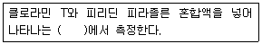
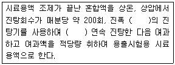
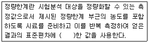
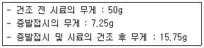
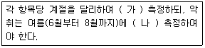

폐기물처리기사 (2014-05-25 기출문제)
1과목: 폐기물 개론
1. 어떤 쓰레기의 가연분의 조성비가 60%이며 수분의 함유율이 30%라면 이 쓰레기의 저위발열량(kcal/kg)은? (단, 쓰레기 3성분의 조성비 기준의 추정식 적용)
- 약 2520
- 약 2440
- 약 2320
- 약 2280
(정답률: 70%)

2. 폐기물의 수거노선 설정 시 고려해야 할 사항과 가장 거리가 먼 것은?
- 지형이 언덕인 경우는 내려가면서 수거한다.
- 발생량이 적으나 수거빈도가 동일하기를 원하는 곳은 같은 날 왕복내에서 수거 처리한다.
- 가능한 한 시계방향으로 수거노선을 정한다.
- 발생량이 가장 적은 곳부터 시작하여 많은 곳으로 수거노선을 정한다.
(정답률: 96%)
3. 폐기물 압축기에 대한 설명으로 틀린 것은?
- 압축에 의해 부피를 1/10까지 감소시킬 수 있으며 수분이 빠지므로 중량도 감소시킬 수 있다.
- 고압력 압축기로 폐기물의 밀도를 1600 kg/m3까지 압축시킬 수 있으나 경제적 압축 밀도는 1000kg/m3 정도이다.
- 고정식 압축기는 주로 유압에 의해 압축시키며 압축방법에 따라 회분식과 연속식으로 구분된다.
- 수직식 또는 소용돌이식 압축기는 기계적 작동이나 유압 또는 공기압에 의해 작동하는 압축피스톤을 갖고 있다.
(정답률: 76%)
4. 청소상태의 평가방법에 관한 설명으로 옳지 않은 것은?
- 지역사회 효과지수는 가로의 청소상태를 기준으로 평가한다.
- 사용자 만족도 지수는 서비스를 받는 사람들의 만족도를 설문조사하여 계산된다.
- 지역사회 효과지수에서 가로 청결상태를 0~10점으로 부여하며 문제점 여부에 따라 1~2점씩 감점한다.
- 지역사회 효과지수에서 감점이 되는 문제점은 화재유발이 가능한 경우, 자동차와 같은 큰 폐기물이 버려져 있는 경우 등 이다.
(정답률: 83%)
5. 1일 폐기물 발생량이 1000톤인 도시에서 5톤 트럭(적재가능량)을 이용하여 쓰레기를 매립지까지 운반하려고 한다. 다음과 같은 조건하에서 하루에 필요한 운반트럭의 대수는? (단, 예비차량 포함, 기타조건 고려하지 않음)

- 20대
- 25대
- 30대
- 35대
(정답률: 72%)
6. 다음과 같은 조건의 혼합쓰레기를 이용하여 함수량 20%의 쓰레기로 건조시켰다면 건조된 쓰레기량은? (단, 비중은 1.0 기준, 기타조건은 고려하지 않음)

- 6.32(t)
- 8.⑤(t)
- 10.13(t)
- 12.38(t)
(정답률: 63%)
7. X90 = 3.5cm로 도시폐기물을 파쇄 하고자 할 때 (즉, 90% 이상을 3.5cm보다 작게 파쇄하고자 할때) Rosin-Rammler 모델에 의한 특성입자크기 Xo는? (단, n=1로 가정)
- 약 1.15cm
- 약 1.38cm
- 약 1.52cm
- 약 1.78cm
(정답률: 87%)
8. 함수율 50%인 쓰레기를 건조시켜 함수율이 20%인 쓰레기로 만들려면 쓰레기 톤당 얼마의 수분을 증발시켜야 하는가? (단, 비중은 1.0 기준)
- 255kg
- 275kg
- 355kg
- 375kg
(정답률: 90%)
9. 어느 도시의 쓰레기 발생량이 6배로 증가하였으나 쓰레기 수거노동력(MHT)은 그대로 유지시키고자 한다. 수거시간을 50% 증가시키는 경우 수거인원은 몇 배로 증가 되어야 하는가?
- 2.0배
- 3.0배
- 3.5배
- 4.0배
(정답률: 76%)
10. 폐기물의 일반적인 수거방법 중 관거(pipeline)를 이용한 수거 방법이 아닌 것은?
- 캡슐수송 방법
- 슬러지수송 방법
- 공기수송 방법
- 모노레일수송 방법
(정답률: 94%)
11. 폐기물의 성상조사 결과, 표와 같은 결과를 구했다. 이 지역에 Home Compaction Unit(가정용 부피 축소기)를 설치하고 난 후의 폐기물 전체의 밀도가 400kg/m3으로 예상된다면 부피 감소율(%)은?
- 약 62
- 약 67
- 약 74
- 약 78
(정답률: 84%)
12. 인구 10만 명(1인 1일 쓰레기량이 0.9kg)인 도시에서 배출하는 쓰레기를 하루기준으로 적재용량 10m3 인 차량 60대를 사용하여 처리하였다면 배출 쓰레기의 밀도는? (단, 차량은 1회 운행기준, 기타 조건은 고려하지 않음)
- 125 kg/m3
- 150 kg/m3
- 175 kg/m3
- 200 kg/m3
(정답률: 75%)
13. 적환장에 대한 설명으로 틀린 것은?
- 폐기물의 수거와 운반을 분리하는 기능을 한다.
- 적환장에서 재생 가능한 물질의 선별을 고려하도록 한다.
- 최종처분지와 수거지역의 거리가 먼 경우에 설치 운영한다.
- 고밀도 거주지역이 존재할 때 설치 운영한다.
(정답률: 90%)
14. 굴림통 분쇄기(Roll Crusher)에 관한 설명으로 틀린 것은?
- 재회수과정에서 유리같이 깨지기 쉬운 물질을 분쇄할 때 이용된다.
- 퍼짐성이 있는 금속캔류는 단순히 납작하게 된다.
- 유리와 금속류가 섞인 폐기물을 굴림통 분쇄기에 투입하면 분쇄된 유리를 체로 쳐서 쉽게 분리할 수 있다.
- 분쇄는 투입물 선별 과정과 이것을 압축시키는 두 가지 과정으로 구성된다.
(정답률: 76%)
15. 어는 지역에서 1주일 동안 쓰레기 수거현황을 조사한 결과가 다음과 같았다. 쓰레기 발생량(kg/cap·day)는?

- 0.75
- 1.25
- 1.71
- 2.14
(정답률: 82%)
16. 쓰레기 발생량 예측모델 중 모든 인자를 시간에 대한 함수로 나타낸 후 시간에 대한 함수로 표현된각 영향 인자들간의 상관관계를 수식화 하는 방법은?
- 동적모사모델
- 다중인자모델
- 다중회귀모델
- 동적인자모델
(정답률: 69%)
17. 건식파쇄인 전단파쇄기에 관한 설명으로 틀린것은?
- 주로 목재류, 플라스틱류 및 종이류를 파쇄하는데 이용된다.
- 고정칼, 왕복 또는 회전칼과의 교합에 의하여 폐기물을 전단한다.
- Hammermill이 대표적이며 Impact crusher 등이 있다.
- 충격파쇄기에 비하여 파쇄속도가 느리고 이물질의 혼입에 약하다.
(정답률: 86%)
18. 쓰레기를 압축시키기 전 밀도가 0.38ton/m3 이었던 것을 압축기에 넣어 압축시킨 결과 0.57ton/m3으로 증가하였다. 이 때 부피의 감소율은?
- 24.3%
- 27.3%
- 30.3%
- 33.3%
(정답률: 73%)
19. 함수율이 94%인 수거분뇨 200kL/d를 70% 함수율의 건조 슬러지로 만들면 하루의 건조슬러지 생성량은? (단, 수거분뇨의 비중은 1.0 기준)
- 30 kL/d
- 35 kL/d
- 40 kL/d
- 45 kL/d
(정답률: 84%)
20. 다음의 폐기물의 성상분석 절차 중 가장 먼저 이루어지는 것은?
- 절단 및 분쇄
- 건조
- 밀도측정
- 전처리
(정답률: 92%)
2과목: 폐기물 처리 기술
21. 유해폐기물의 고형화 방법 중 열가소성 플라스틱법에 관한 설명으로 옳지 않은 것은?
- 고온에서 분해되는 물질에는 사용할 수 없다.
- 용출손실율이 시멘트 기초법보다 낮다.
- 혼합율(MR)이 비교적 낮다.
- 고화처리된 폐기물성분을 나중에 회수하여 재활용할 수 있다.
(정답률: 70%)
22. 어느 도시의 쓰레기 발생량은 1000t/일, 밀도는 0.5 t/m3 이며, trench법으로 매립할 계획이다. 압축에 따른 부피감소율 40%, trench 깊이 4.0m, 매립에 사용되는 도랑면적 점유율이 전체부지의 60% 라면 연간 필요한 전체 부지 면적은?
- 182500m2
- 243500m2
- 292500m2
- 325500m2
(정답률: 70%)
23. 5000m3/일의 하수를 처리하는 처리장의 1차 침전지에서 침전된 슬러지 내 고형물이 0.2톤/일, 2차 침전지에서 0.1톤/일이 제거되며, 각 슬러지의 함수율은 98%, 99.5%이다. 침전지에서 발생한 슬러지의 체류시간을 10일로 하여 농축시키려면 농축조의 크기는? (단, 슬러지의 비중은 1.0으로 가정함)
- 100m3
- 200m3
- 300m3
- 400m3
(정답률: 58%)
24. 다음의 조건에서 침출수 통과 년수는?

- 약 7 년
- 약 8 년
- 약 9 년
- 약 10 년
(정답률: 64%)
25. 하수처리과정에서 발생하는 슬러지의 탈수특성을 평가하기 위한 모세관 흡수시간(CST) 측정법에 대한 설명 중 틀린 것은?
- 여과지의 일정한 거리를 시료의 물이 흡수되어 전파되어 가는 시간을 측정하는 것으로 슬러지 입자의 크기 및 친수성 정도에 따라 측정되는 시간이 다르게 나타난다.
- 다른 탈수성능을 측정하는 방법에 비하여 장치가 간단하고 측정시간이 짦다는 장점이 있다.
- 탈수성이 불량한 시료의 경우, CST 수치는 높게 나타난다.
- 본 실험에 사용되는 장치로는 Graduated Cylinder 와 Buchner Funnel을 사용한다.
(정답률: 56%)
26. 분뇨를 1차 처리한 후 BOD 농도가 4000mg/L 이었다. 이를 약 20배로 희석한 후 2차 처리를 하려 한다. 분뇨의 방류수 허용기준 이하로 처리하려면 2차 처리 공정에서 요구되는 BOD 제거 효율은? (단, 분뇨 BOD 방류수 허용기준 : 40mg/L, 기타 조건은 고려하지 않음)
- 50% 이상
- 60% 이상
- 70% 이상
- 80% 이상
(정답률: 64%)
27. 슬러지를 개량하는 목적으로 가장 적합한 것은?
- 슬러지의 탈수가 잘 되게 하기 위해서
- 탈리액의 BOD를 감소시키기 위해서
- 슬러지 건조를 촉진하기 위해서
- 슬러지의 악취를 줄이기 위해서
(정답률: 71%)
28. 슬러지 수분 결합상태 중 탈수하기 가장 어려운 형태는?
- 모관결합수
- 간극모관결합수
- 표면부착수
- 내부수
(정답률: 92%)
29. 어느 펄프공장의 폐수를 생물학적으로 처리한 결과 매일 500kg의 슬러지가 발생하였다. 함수율이 80%이면 건조 슬러지 중량은? (단, 비중은 1.0 기준)
- 50kg/일
- 100kg/일
- 200kg/일
- 400kg/일
(정답률: 76%)
30. 합성차수막의 종류 중 PVC의 장점에 관한 설명으로 틀린 것은?
- 가격이 저렴하다.
- 접합이 용이하다.
- 강도가 높다.
- 대부분의 유기화학물질에 강하다.
(정답률: 75%)
31. 매립공법 중 내륙매립공법에 관한 내용으로 틀린 것은?
- 셀(cell)공법 : 쓰레기 비탈면의 경사는 15~25%의 구배로 하는 것이 좋다.
- 셀(cell)공법 : 1일 작업하는 셀 크기는 매립처분량에 따라 결정된다.
- 도랑형 공법 : 파낸 흙이 항상 남는데 이를 복토재로 이용할 수 있다.
- 도랑형 공법 : 쓰레기를 투입하여 순차적으로 육지화하는 방법이다.
(정답률: 87%)
32. 다음 조건의 중금속 슬러지를 시멘트 고형화할 때 부피 변화율(VCF)은?

- 약 1.32
- 약 1.26
- 약 1.19
- 약 1.12
(정답률: 70%)
33. 친산소성 퇴비화 공정의 설계 운영고려 인자에 관한 내용으로 틀린 것은?
- 수분함량 : 퇴비화기간 동안 수분함량은 50~60% 범위에서 유지된다.
- C/N 비 : 초기 C/N비는 25~50이 적당하며 C/N 비가 높은 경우는 암모니아 가스가 발생한다.
- pH 조절 : 적당한 분해작용을 위해서는 pH 7~7.5 범위를 유지하여야 한다.
- 공기공급 : 이론적인 산소요구량은 식을 이용하여 추정 가능하다.
(정답률: 74%)
34. 유기물(C6H12O6) 0.1톤(ton)에서 혐기성 소화 시 생성될 수 있는 최대 메탄의 양(kg) 및 체적(Sm3)은?
- 12 kg, 31 Sm3
- 27 kg, 37Sm3
- 34 kg, 42Sm3
- 42 kg, 47Sm3
(정답률: 73%)
35. 차수설비에는 표면차수막과 연직차수막으로 구분되어지는데, 연직차수막에 대한 일반적인 내용과 가장 거리가 먼 것은?
- 지중에 수평방향의 차수층이 존재하는 경우에 적용한다.
- 지하수 집배수 시설이 필요하다.
- 지하에 매설하기 때문에 차수성 확인이 어렵다.
- 차수막 단위면적당 공사비는 비싸지만 총공사비는 싸다.
(정답률: 82%)
36. 소화조로 유입되는 슬러지의 양이 500m3/일이고 고형물과 고형물 중 VS 함량이 각각 3.5%와 70%이다. 소화조의 VS 소화율은 60%이고, 소화조의 가스 발생량은 0.75m3/kg-VS일 때 일일 생성되는 가스량은? (단, 비중은 1.0 기준)
- 약 3510 m3/일
- 약 4520 m3/일
- 약 5510 m3/일
- 약 6550 m3/일
(정답률: 63%)
37. 고형물의 함량이 80kg/m3인 농축슬러지를 18m3/hr 유량으로 탈수시키려 한다. 고형물 중량에 대해 25%의 소석회를 넣으면 함수율 80%의 탈수 cake이 얻어진다고 할 때 농축 슬러지로부터 얻어지는 탈수 cake의 양은? (단, 하루 운전시간은 24시간, cake의 비중은 1.0)
- 약 120 t/day
- 약 220 t/day
- 약 320 t/day
- 약 420 t/day
(정답률: 64%)
38. 건조된 고형분의 비중이 1.4 이며 이 슬러지 케익의 건조 이전에 고형분의 함량은 40% 이다. 슬러지 건조중량이 400kg이라면 슬러지 케익의 건조 이전의 부피(m3)는?
- 약 0.59
- 약 0.69
- 약 0.79
- 약 0.89
(정답률: 57%)
39. 1일 처리량이 100kL 인 분뇨처리장에서 중온소화방식을 택하고자 한다. 소화 후 슬러지량은? (단, 투입분뇨의 함수율 98%, 고형물 중 유기물 함유율 70%, 그 중 60%가 액화 및 가스화 되고 소화슬러지 함수율은 96%이다. 슬러지 비중 1.0 으로 가정)
- 15 m3/d
- 29 m3/d
- 44 m3/d
- 53 m3/d
(정답률: 65%)
40. 용적 1000m3인 슬러지 혐기성 소화조가 함수율 95%의 슬러지를 하루에 20m3를 소화시킨다면 이 소화조의 유기물 부하율(kgVS/m3·d)은? (단, 슬러지 고형물 중 무기물 비율은 40%이고, 슬러지의 비중을 1.0 이라고 가정한다.)
- 0.2 kgVS/m3·d
- 0.4 kgVS/m3·d
- 0.6 kgVS/m3·d
- 0.8 kgVS/m3·d
(정답률: 70%)
3과목: 폐기물 소각 및 열회수
41. 유동층 소각로의 장·단점으로 옳지 않은 것은?
- 반응시간이 빨라 소각시간이 짧은 장점이 있다.
- 상(床)으로부터 찌꺼기의 분리가 어려운 단점이 있다.
- 기계적 구동부분이 많아 고장률이 높은 단점이 있다.
- 투입이나 유동화를 위해 파쇄가 필요한 단점이 있다.
(정답률: 76%)
42. 어느 도시의 폐기물을 분석한 결과 가연성 성분이 70%, 불연성 성분이 30%였다. 이 지역의 폐기물 발생량은 1일 1인 1.2kg이다. 인구 50000명인 이곳에서 가연성 성분을 85%을 회수하여 RDF를 생산한다면 RDF의 년간 생산량은?
- 약 11000 톤/년
- 약 12000 톤/년
- 약 13000 톤/년
- 약 14000 톤/년
(정답률: 68%)
43. 황의 함량이 5%인 폐기물 30000kg을 연소할 때 생성되는 SO2 가스의 총 부피는 몇 Sm3 인가?(단, 표준상태를 기준으로 하며, 황성분은 전량 SO2로 가스화 되며, 완전연소이다.)
- 850
- 950
- 1⑤0
- 1150
(정답률: 76%)
44. 화씨온도 100℉ 는 몇 ℃ 인가?
- 35.2
- 37.8
- 39.7
- 41.3
(정답률: 73%)
45. CH3OH 2kg을 연소시키는데 필요한 이론공기량의 부피는 몇 Sm3 인가?
- 7
- 8
- 9
- 10
(정답률: 57%)
46. 쓰레기 소각에 비하여 열분해공정의 특징이라 볼 수 없는 것은?
- 배기 가스량이 적다.
- 환원성 분위기를 유지할 수 있어서 Cr+3가 Cr+6로 변화하지 않는다.
- 황분, 중금속분이 Ash 중에 고정되는 비율이 작다.
- 흡열반응이다.
(정답률: 84%)
47. 소각공정에서 발생하는 다이옥신에 관한 설명으로 옳지 않은 것은?
- 쓰레기 중 PVC 또는 플라스틱류 등을 포함하고 있는 합성물질을 연소시킬 때 발생한다.
- 연소시 발생하는 미연분의 양과 비산재의 양을 줄여 다이옥신을 저감할 수 있다.
- 다이옥신 재형성 온도구역을 설정하여 재합성을 유도함으로써 제거할 수 있다.
- 활성탄과 백필터를 적용하여 다이옥신을 제거하는 설비가 많이 이용된다.
(정답률: 78%)
48. 연소과정에서 등가비가 1보다 큰 경우는?
- 공기가 과잉으로 공급된 경우
- 연료가 이론적인 경우보다 적을 경우
- 완전 연소에 알맞은 연료와 산화제가 혼합될 경우
- 연료가 과잉으로 공급된 경우
(정답률: 63%)
49. 연소실의 부피를 결정하려고 한다. 연소실의 부하율은 3.6×105 kcal/m3 · hr 이고 발열량이 1600 kcal/kg 인 쓰레기를 1일 400ton 소각시킬 때 소각로의 연소실 부피(m3)는? (단, 소각로는 연속가동 한다.)
- 104 m3
- 974 m3
- 84 m3
- 74 m3
(정답률: 74%)
50. 밀도가 600 kg/m3인 쓰레기 100ton을 소각한 결과 밀도가 1200kg/m3인 소각재가 60ton이 발생하였다면 소각시 쓰레기의 용적 감소율(%)은?
- 70
- 75
- 80
- 85
(정답률: 54%)
51. 탄소 및 수소의 중량조성이 각각 80%, 20%인 액체연료를 매시간 200kg 연소시켜 배기가스의 조성을 분석한 결과 CO2 12.5%, O2 3.5%, N2 84% 이었다. 이 경우 시간당 필요한 공기량(Sm3)은?
- 약 3450
- 약 2950
- 약 2450
- 약 1950
(정답률: 63%)
52. CH4 80%, CO2 5%, N2 3%, O2 12% 로 조성된 기체연료 1 Sm3을 12 Sm3의 공기로 연소한다면 이때 공기비는?
- 1.4
- 1.7
- 2.1
- 2.3
(정답률: 60%)
53. 다음 조건과 같은 함유성분의 폐기물을 연소 처리할 때 저위발열량은? [조건] 함수율 : 30%, 불황성분 : 14%, 탄소 : 20%, 수소 : 10%, 산소 : 24%, 유황 : 2%, Dulong식 기준)
- 약 2400 kcal/kg
- 약 3300 kcal/kg
- 약 4200 kcal/kg
- 약 4600 kcal/kg
(정답률: 70%)
54. 에틸렌(C2H4)의 고발열량이 15280 kcal/Sm3 이라면 저발열량(kcal/Sm3)은?
- 14920
- 14800
- 14680
- 14320
(정답률: 69%)
55. 저위발열량이 10000 kcal/Sm3인 기체연료를 연소시, 이론 습연소가스량이 20Sm3/Sm3 이고 이론연소온도는 2500℃ 라고 한다. 연료 연소가스의 평균정압비열은? (단, 연소용 공기, 연료 온도는 15℃)
- 0.2(kcal/Sm3·℃)
- 0.3(kcal/Sm3·℃)
- 0.4(kcal/Sm3·℃)
- 0.5(kcal/Sm3·℃)
(정답률: 74%)
56. 보일러 전열면을 통하여 연소가스의 여열로 보일러 급수를 예열하여 보일러 효율을 높이는 열교환 장치는?
- 공기 예열기
- 절탄기
- 과열기
- 재열기
(정답률: 81%)
57. 탄소함유율이 50wt% 와 불연분 50wt%인 고형 폐기물 100kg을 완전연소 시킬 때 필요한 이론 공기량(Sm3)은?
- 약 93
- 약 256
- 약 445
- 약 577
(정답률: 80%)
58. 표준상태에서 한 배기가스 내에 존재하는 CO2 농도가 0.01% 일 때 이것은 몇 mg/m3 인가?
- 146
- 196
- 266
- 296
(정답률: 68%)
59. 도시쓰레기 성분 중 수소 5kg이 완전연소 되었을 때 필요로 한 이론적 산소 요구량과 연소생성물(combustion product)인 수분의 양은 각각 얼마인가? (단, 산소(O2), 수분(H2O) 순서)
- 25kg, 30kg
- 30kg, 35kg
- 35kg, 40kg
- 40kg, 45kg
(정답률: 74%)
60. 탄소 5kg을 완전 연소할 경우 발생하는 CO2의 가스량은?
- 3.3 Sm3
- 5.3 Sm3
- 7.3 Sm3
- 9.3 Sm3
(정답률: 71%)
4과목: 폐기물 공정시험기준(방법)
61. 이온전극법을 적용하여 분석하는 항목은? (단, 폐기물공정시험기준에 의함)
- 시안
- 수은
- 유기인
- 비소
(정답률: 80%)
62. 다음은 시안의 자외선/가시선 분광법(흡광광도법)에 관한 내용이다. ( )안에 옳은 내용은?

- 적색을 460nm
- 황갈색을 560nm
- 적자색을 520nm
- 청색을 620nm
(정답률: 81%)
63. 중량법으로 기름성분을 측정할 때 시료채취 및 관리에 관한 내용으로 옳은 것은?
- 시료는 6시간 이내 증발처리를 하여야 하나 최대한 24시간을 넘기지 말아야 한다.
- 시료는 8시간 이내 증발처리를 하여야 하나 최대한 24시간을 넘기지 말아야 한다.
- 시료는 12시간 이내 증발처리를 하여야 하나 최대한 7일을 넘기지 말아야 한다.
- 시료는 24시간 이내 증발처리를 하여야 하나 최대한 7일을 넘기지 말아야 한다.
(정답률: 64%)
64. 폐기물의 강열럄량 및 유기물 함량을 중량법으로 시험시 시료를 탄화시키기 위해 사용하는 용액으로 가장 적합한 것은?
- 15% 황산암모늄용액
- 15% 질산암모늄용액
- 25% 황산암모늄용액
- 25% 질산암모늄용액
(정답률: 79%)
65. 자외선/가시선 분광법으로 크롬을 정량할 때 KMnO4를 사용하는 목적은?
- 시료중의 총 크롬을 6가 크롬으로 하기 위해서다.
- 시료중의 총 크롬을 3가 크롬으로 하기 위해서다.
- 시료중의 총 크롬을 이온화 하기 위해서다.
- 디페닐카르바지드와 반응을 최적화 하기 위해서다.
(정답률: 84%)
66. 폐기물이 적재되어 있는 운반차량에서 시료를 채취할 경우 5톤 이상의 차량에 적재되어 있을 때에는 적재폐기물을 평면상에서 몇 등분 한 후 각 등분마다 시료를 채취하는가?
- 3등분
- 6등분
- 9등분
- 12등분
(정답률: 82%)
67. 유도결합플라스마-원자발광광도기 구성 장치로 가장 옳은 것은?
- 시료 도입부, 고주파 전원부, 광원부, 분광부, 연산 처리부, 기록부
- 시료 도입부, 시료 원자화부, 광원부, 측광부, 연산 처리부, 기록부
- 시료 도입부, 고주파 전원부, 광원부, 파장선택부, 연산 처리부, 기록부
- 시료 도입부, 시료 원자화부, 파장선택부, 측광부, 연산처리부, 기록부
(정답률: 69%)
68. 소각재 10g 이 있다. 이 소각재의 pH를 측정하기 위하여 몇 mL의 정제수를 넣고 교반 하는가?
- 10.0 mL
- 25.0 mL
- 50.0 mL
- 100.0 mL
(정답률: 63%)
69. 다음 중 분석용 저울은 몇 mg까지 달 수 있는 것이어야 하는가? (단, 총칙 기준)
- 1.0mg
- 0.1mg
- 0.01mg
- 0.001mg
(정답률: 80%)
70. 취급 또는 저장하는 동안에 밖으로부터의 공기 또는 다른 가스가 침입하지 아니하도록 내용물을 보호하는 용기는 어떤 용기인가?
- 기밀용기
- 밀폐용기
- 밀봉용기
- 차광용기
(정답률: 72%)
71. 폐기물공정시험기준(방법)에서 규정하고 있는 대상폐기물의 양과 시료의 최소 수가 잘못 연결된 것은?
- 1톤 미만 : 6
- 5톤 이상 ~ 30톤 미만 : 14
- 100톤 이상 ~ 500톤 미만 : 28
- 500톤 이상 ~ 1000톤 미만 : 36
(정답률: 90%)
72. 다음은 폐기물 용출조작에 관한 내용이다. ( )안에 옳은 내용은?

- 4~5cm, 4시간
- 4~5cm, 6시간
- 5~6cm, 4시간
- 5~6cm, 6시간
(정답률: 78%)
73. 수은을 원자흡수분광광도법으로 측정할 때 시료 중 수은을 금속수은으로 환원시키기 위해 넣는 시약은?
- 아연분말
- 황산나트륨
- 시안화칼륨
- 이염화주석
(정답률: 79%)
74. 시료의 채취방법에 관한 내용으로 옳은 것은?
- 콘크리트 고형화물의 경우 대형의 고형화물로써 분쇄가 어려운 경우에는 임의의 2개소에서 채취하여 각각 파쇄하여 100g씩 균등량 혼합하여 채취한다.
- 콘크리트 고형화물의 경우 대형의 고형화물로써 분쇄가 어려운 경우에는 임의의 2개소에서 채취하여 각각 파쇄하여 500g씩 균등량 혼합하여 채취한다.
- 콘크리트 고형화물의 경우 대형의 고형화물로써 분쇄가 어려운 경우에는 임의의 5개소에서 채취하여 각각 파쇄하여 100g씩 균등량 혼합하여 채취한다.
- 콘크리트 고형화물의 경우 대형의 고형화물로써 분쇄가 어려운 경우에는 임의의 5개소에서 채취하여 각각 파쇄하여 500g씩 균등량 혼합하여 채취한다.
(정답률: 75%)
75. 수분함량이 94%인 시료의 카드뮴(Cd)을 용출하여 실험한 결과 농도가 1.2 mg/L 이었다면 시료의 수분함량을 보정한 농도는?
- 1.7 mg/L
- 2.4 mg/L
- 3.0 mg/L
- 3.4 mg/L
(정답률: 76%)
76. '항량으로 될 때까지 건조한다.'라 함은 같은 조건에서 1시간 더 건조할 때 전후 무게의 차가 g당 몇 mg 이하일 때를 말하는가?
- 0.01mg
- 0.03mg
- 0.1mg
- 0.3mg
(정답률: 76%)
77. 다음은 정량한계(LOQ)에 관한 내용이다. ( )안에 내용으로 옳은 것은?

- 3백
- 3.3배
- 5배
- 10배
(정답률: 75%)
78. 폐기물의 시료채취 방법에 관한 설명으로 틀린것은?
- 시료의 채취는 일반적으로 폐기물이 생성되는 단위 공정별로 구분하여 채취하여야 한다.
- 폐기물소각시설의 연속식 연소방식 소각재 반출 설비에서 채취할 때 소각재가 운반차량에 적재되어 있는 경우에는 적재 차량에서 채취하는 것을 원칙으로 한다.
- 폐기물소각시설의 연속식 연소방식 소각재 반출 설비에서 채취하는 경우, 비산재 저장조에서는 부설된 크레인을 이용하여 채취한다.
- PCBs 및 휘발성 저급 염소화 탄화수소류 실험을 위한 시료의 채취 시는 무색경질의 유리병을 사용한다.
(정답률: 38%)
79. 자외선/가시선 분광법에 의하여 폐기물 내 크롬을 분석하기 위한 실험방법에 관한 설명으로 옳은 것은?
- 발색 시 수산화나트륨의 최적 농도는 0.5N이다. 만일 수산화나트륨의 양이 부족하면 5mL을 넣어 시험한다.
- 시료 중에 철이 5mg 이상으로 공존할 경우에는 다이페닐카바자이드 용액을 넣기 전에 10% 피로인 산나트륨·10수화물 용액 2mL를 넣는다.
- 적자색의 착화합물을 흡광도 540nm에서 측정한다.
- 총 크롬을 과망간산나트륨을 사용하여 6가크롬으로 산화시킨 다음 알칼리성에서 다이페닐카바자이드와 반응시킨다.
(정답률: 59%)
80. 음식물 폐기물의 수분을 측정하기 위해 실험하였더니 다음과 같은 결과를 얻었다. 수분은 몇 %인가?

- 87%
- 83%
- 78%
- 74%
(정답률: 71%)
5과목: 폐기물 관계 법규
81. 폐기물처리 기본계획에 포함되어야 하는 사항이 아닌 것은?
- 폐기물의 기본관리여건 및 전망
- 폐기물의 수집·운반·보관 및 그 장비·용기 등의 개선에 관한 사항
- 재원의 확보계획
- 폐기물의 감량화와 재활용 등 자원화에 관한 사항
(정답률: 86%)
82. 지정폐기물(의료폐기물은 제외) 보관창고에 설치해야 하는 지정폐기물의 종류, 보관가능 용량, 취급시 주의사항 및 관리책임자 등을 기재한 표지판 표지의 규격기준으로 옳은 것은? (단, 드럼 등 소형용기에 붙이는 경우가 아님)
- 가로 60센티미터 이상×세로 40센티미터 이상
- 가로 80센티미터 이상×세로 60센티미터 이상
- 가로 100센티미터 이상×세로 80센티미터 이상
- 가로 120센티미터 이상×세로 100센티미터 이상
(정답률: 69%)
83. 환경부령으로 정하는 폐기물처리시설의 설치를 마친 자는 환경부령으로 정하는 검사기관으로부터 검사를 받아야 한다. 다음 중 음식물류 폐기물 처리시설의 검사기관으로 옳은 것은? (단, 그 밖에 환경부장관이 정하여 고시하는 기관제외)
- 한국산업연구원
- 보건환경연구원
- 한국농어촌공사
- 한국환경공단
(정답률: 71%)
84. 폐기물처리시설은 환경부령으로 정하는 기준에 맞게 설치하되 환경부령으로 정하는 규모 미만의 폐기물 소각시설을 설치, 운영하여서는 아니 된다. “환경부령으로 정하는 규모 미만의 폐기물 소각시설” 기준으로 옳은 것은?
- 시간당 폐기물 소각능력이 15킬로그램 미만인 폐기물 소각시설
- 시간당 폐기물 소각능력이 25킬로그램 미만인 폐기물 소각시설
- 시간당 폐기물 소각능력이 50킬로그램 미만인 폐기물 소각시설
- 시간당 폐기물 소각능력이 100킬로그램 미만인 폐기물 소각시설
(정답률: 52%)
85. 폐기물처리업자가 방치한 폐기물의 처리량과 처리기간으로 옳은 것은? (단, 폐기물처리 공제 조합에 처리를 명하는 경우이며 연장 처리기간은 고려하지 않음)
- 폐기물처리업자의 폐기물 허용보관량의 1.5배 이내, 1개월 범위
- 폐기물처리업자의 폐기물 허용보관량의 1.5배 이내, 2개월 범위
- 폐기물처리업자의 폐기물 허용보관량의 2.0배 이내, 1개월 범위
- 폐기물처리업자의 폐기물 허용보관량의 2.0배 이내, 2개월 범위
(정답률: 67%)
86. 환경부 장관 또는 시 · 도지사는 폐기물처리업자나 폐기물처리 신고자가 “대통령령으로 정하는 기간”을 초과하여 휴업을 하거나 폐업 등으로 조업을 중단하면 기간을 정하여 그 폐기물처리업자나 폐기물처리 신고자에게 그가 보관하고 있는 폐기물의 처리를 명할 수 있다. 동물성 잔재물(殘滓物)과 의료폐기물 중 조직물류폐기물 등 부패나 변질의 우려가 있는 폐기물인 경우에 “대통령령으로 정하는 기간”은?
- 5일
- 10일
- 15일
- 20일
(정답률: 73%)
87. 다음은 폐기물처리시설 주변지역의 영향조사 기준 중 조사방법(조사횟수)에 관한 내용이다. ( )안에 옳은 내용은?

- 가 : 2회 이상, 나 : 1회 이상
- 가 : 4회 이상, 나 : 2회 이상
- 가 : 6회 이상, 나 : 3회 이상
- 가 : 8회 이상, 나 : 4회 이상
(정답률: 80%)
88. 폐기물 처분시설 또는 재활용시설의 관리기준에서 관리형 매립시설에서 발생하는 침출수의 배출허용기준으로 옳은 것은? (단, 화학적산소요구량(mg/L), 과망간산칼륨법에 따른 경우, 1일 침출수 배출량은 2000m3 미만, 나 지역)
- 80
- 100
- 120
- 150
(정답률: 57%)
89. 시 · 도지사가 폐기물처리 신고자에게 처리금지 명령을 하여야 하는 경우, 천재지변이나 그 밖의 부득이한 사유로 해당 폐기물처리를 계속하도록 할 필요가 인정되는 경우에 그 처리금지를 갈음하여 부과할 수 있는 과징금의 최대 액수는?
- 2천만원
- 5천만원
- 1억원
- 2억원
(정답률: 61%)
90. 특별자치시장, 특별자치도지사, 시장, 군수, 구청장은 조례로 정하는 바에 따라 종량제 봉투 등의 제작, 유통, 판매를 대행하게 할 수 있다. 이러한 대행 계약을 체결하지 아니하고 종량제 봉투 등을 판매한 자에 대한 과태료 부과기준은?
- 200만원 이하
- 300만원 이하
- 500만원 이하
- 1000만원 이하
(정답률: 68%)
91. 폐기물 처리업자가 폐업을 한 경우 폐업 한 날부터 몇 일 이내에 신고서와 구비서류를 첨부하여 시·도지사 등에게 제출하여야 하는가?
- 10일 이내
- 15일 이내
- 20일 이내
- 30일 이내
(정답률: 73%)
92. 폐기물 처분시설 또는 재활용시설 중 의료폐기물을 대상으로 하는 시설의 기술관리인 자격기준에 해당하지 않는 자격은?
- 수질환경산업기사
- 폐기물처리산업기사
- 임상병리사
- 위생사
(정답률: 86%)
93. 에너지회수기준을 측정하는 기관과 가장 거리가 먼 것은?
- 한국산업기술시험원
- 한국에너지기술연구원
- 한국기계연구원
- 한국화학기술연구원
(정답률: 53%)
94. 특별자치시장, 특별자치도지사, 시장 · 군수 ·구청장이 수립하는 음식물류 폐기물발생 억제계획의 수립주기는?
- 1년
- 2년
- 3년
- 5년
(정답률: 79%)
95. 매립시설의 사용종료 · 폐쇄 신고서에 첨부하여야 하는 폐기물 매립시설의 사후관리계획서에 포함되어야 하는 내용으로 가장 거리가 먼 것은?
- 사후관리 추진일정
- 침출수 관리계획(차단형 매립시설은 제외한다)
- 구조물과 지반 등의 안정도유지계획
- 사후관리 조직 및 비용
(정답률: 72%)
96. 폐기물 중간처분시설 중 기계적 처분시설에 해당하는 시설과 그 동력규모 기준으로 옳지 않은 것은?
- 압축시설(동력 10마력 이상인 시설로 한정)
- 파쇄 · 분쇄시설(동력 20마력 이상인 시설로 한정)
- 증발 · 농축시설(동력 10마력 이상인 시설로 한정)
- 용융시설(동력 10마력 이상인 시설로 한정)
(정답률: 84%)
97. 폐기물관리법령상 다음 폐기물 중간처분시설의 분류(소각시설, 기계적 처분시설, 화학적 처분시설, 생물학적 처분시설) 중 기계적 처분시설에 해당되지않는 것은?
- 멸균분쇄시설
- 세척시설
- 유수 분리시설
- 탈수 · 건조시설
(정답률: 78%)
98. 관리형 매립시설에서 발생하는 침출수의 수소이온농도(pH) 배출허용기준은? (단, 청정지역 기준)
- 6.3 ~ 8.0
- 6.3 ~ 8.3
- 5.8 ~ 8.0
- 5.8 ~ 8.3
(정답률: 67%)
99. 폐기물 수집 · 운반업자가 임시보관장소에 보관할 수 있는 폐기물(의료 폐기물 제외)의 허용량 기준은?
- 중량 450톤 이하이고, 용적이 300세제곱미터 이하인 폐기물
- 중량 400톤 이하이고, 용적이 250세제곱미터 이하인 폐기물
- 중량 350톤 이하이고, 용적이 200세제곱미터 이하인 폐기물
- 중량 300톤 이하이고, 용적이 150세제곱미터 이하인 폐기물
(정답률: 78%)
100. 폐기물처리업의 변경신고 사항과 가장 거리가 먼 것은?
- 운반차량의 증·감차
- 연락장소나 사무실 소재지의 변경
- 대표자의 변경(권리, 의무를 승계하는 경우를 제외한다.)
- 상호의 변경
(정답률: 68%)
저위발열량 = 3370 × (0.85 × 0.6 + 0.15 × 0.4) - 9 × 0.3 × 1000
= 2520
따라서, 정답은 "약 2520"입니다.